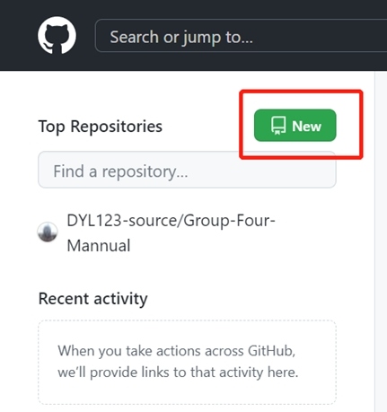
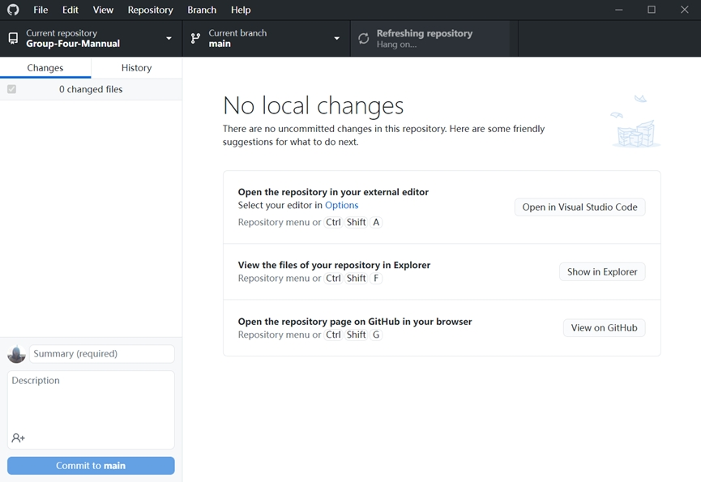
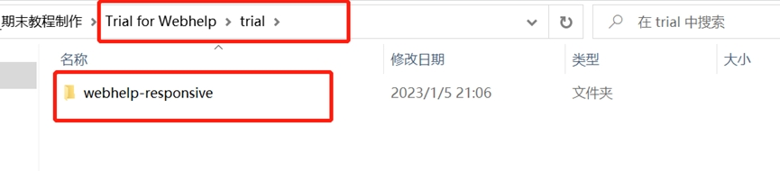
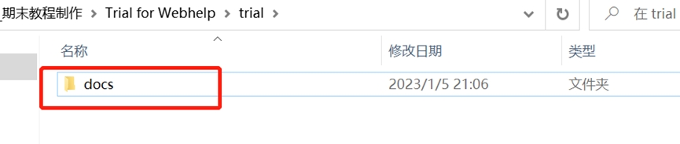

如何将生成的WebHelp通过上传GitHub的方式生成可供用户访问的网址链接？
-
首先在输出ditamap项目时，选择DITA Map WebHelp Responsive格式。

在源文件夹中的【out】文件夹中，可以找到输出的webhelp-responsive文件夹。

-
申请一个GitHub网页版账号，并下载GitHub Desktop。


-
登录GitHub网页版账号，点击新建一个新的“云仓库”，根据提示填写创建。


-
复制该链接，并打开GitHub Desktop。


-
在GitHub Desktop中的【File】中选择【Clone a repository】。

选择URL，并将之前复制的链接粘贴到下图框中，并选择本地的存贮地址，完成“云仓库”的本地克隆。

将之前Oxygen XML Editor生成的webhelp-responsive文件夹复制粘贴到上面克隆的本地文件夹中。


并把文件名重命名为【docs】，如下图所示：
